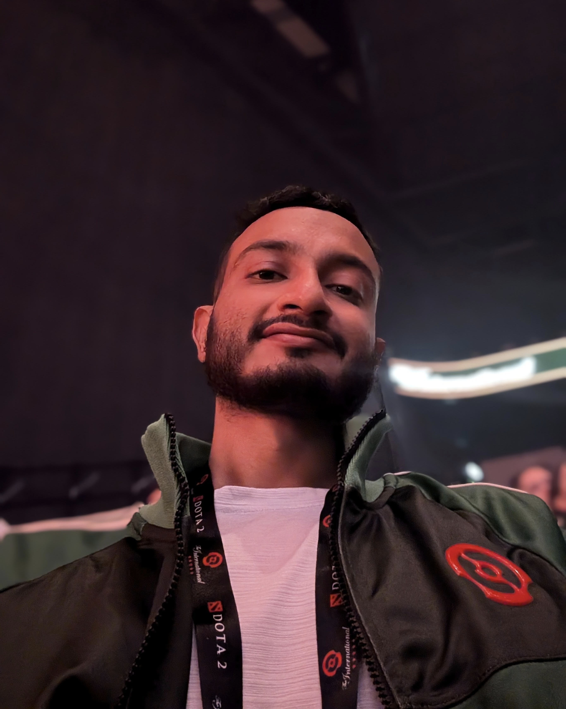

Kashyap Chitta
I am a Postdoctoral Researcher at the NVIDIA Autonomous Vehicle Research Group working from Tübingen, Germany. My research focuses on simulation-based training and evaluation of Physical AI systems.
Bio: Kashyap did a bachelor's degree in electronics at the RV College of Engineering, India. He then moved to the US in 2017 to obtain his Master's degree in computer vision from Carnegie Mellon University, where he was advised by Prof. Martial Hebert. During this time, he was also an intern at the NVIDIA Autonomous Vehicles Applied Research Group working with Dr. Jose M. Alvarez. From 2019, he was a PhD student in the Autonomous Vision Group at the University of Tübingen, Germany, supervised by Prof. Andreas Geiger. He was selected for the doctoral consortium at ICCV 2023, as a 2023 RSS pioneer, and an outstanding reviewer for CVPR, ICCV, ECCV, and NeurIPS. He has also won multiple autonomous driving challenge awards [nuPlan 2023] [CARLA 2020, 2021, 2022, 2023, 2024] [Waymo 2025] [HUGSIM 2025].

Selected Publications

Jiazhi Yang, Kashyap Chitta, Shenyuan Gao, Long Chen, Yuqian Shao, Xiaosong Jia, Hongyang Li, Andreas Geiger, Xiangyu Yue, Li Chen
Advances in Neural Information Processing Systems (NeurIPS), 2025
Abs / Paper / Code /
@inproceedings{Yang2025NEURIPS,
author = {Jiazhi Yang and Kashyap Chitta and Shenyuan Gao and Long Chen and Yuqian Shao and Xiaosong Jia and Hongyang Li and Andreas Geiger and Xiangyu Yue and Li Chen},
title = {ReSim: Reliable World Simulation for Autonomous Driving},
booktitle = {Advances in Neural Information Processing Systems (NeurIPS)},
year = {2025},
}
Daniel Dauner, Marcel Hallgarten, Tianyu Li, Xinshuo Weng, Zhiyu Huang, Zetong Yang, Hongyang Li, Igor Gilitschenski, Boris Ivanovic, Marco Pavone, Andreas Geiger, Kashyap Chitta
Advances in Neural Information Processing Systems (NeurIPS), 2024
Abs / Paper / Supplementary / Video / Code /
@inproceedings{Dauner2024NEURIPS,
author = {Daniel Dauner and Marcel Hallgarten and Tianyu Li and Xinshuo Weng and Zhiyu Huang and Zetong Yang and Hongyang Li and Igor Gilitschenski and Boris Ivanovic and Marco Pavone and Andreas Geiger and Kashyap Chitta},
title = {NAVSIM: Data-Driven Non-Reactive Autonomous Vehicle Simulation and Benchmarking},
booktitle = {Advances in Neural Information Processing Systems (NeurIPS)},
year = {2024},
}
Kashyap Chitta, Aditya Prakash, Bernhard Jaeger, Zehao Yu, Katrin Renz, Andreas Geiger
Transactions on Pattern Analysis and Machine Intelligence (T-PAMI), 2023
Abs / Paper / Supplementary / Video / Poster / Code /
@article{Chitta2023PAMI,
author = {Kashyap Chitta and Aditya Prakash and Bernhard Jaeger and Zehao Yu and Katrin Renz and Andreas Geiger},
title = {TransFuser: Imitation with Transformer-Based Sensor Fusion for Autonomous Driving},
booktitle = {Transactions on Pattern Analysis and Machine Intelligence (T-PAMI)},
year = {2023},
}
Aditya Prakash*, Kashyap Chitta*, Andreas Geiger
Conference on Computer Vision and Pattern Recognition (CVPR), 2021
Abs / Paper / Supplementary / Video / Poster / Code /
@inproceedings{Prakash2021CVPR,
author = {Aditya Prakash and Kashyap Chitta and Andreas Geiger},
title = {Multi-Modal Fusion Transformer for End-to-End Autonomous Driving},
booktitle = {Conference on Computer Vision and Pattern Recognition (CVPR)},
year = {2021},
}Selected Talks


This website is based on the lightweight and easy-to-use template from Michael Niemeyer. Check out his github repository for instructions on how to use it!